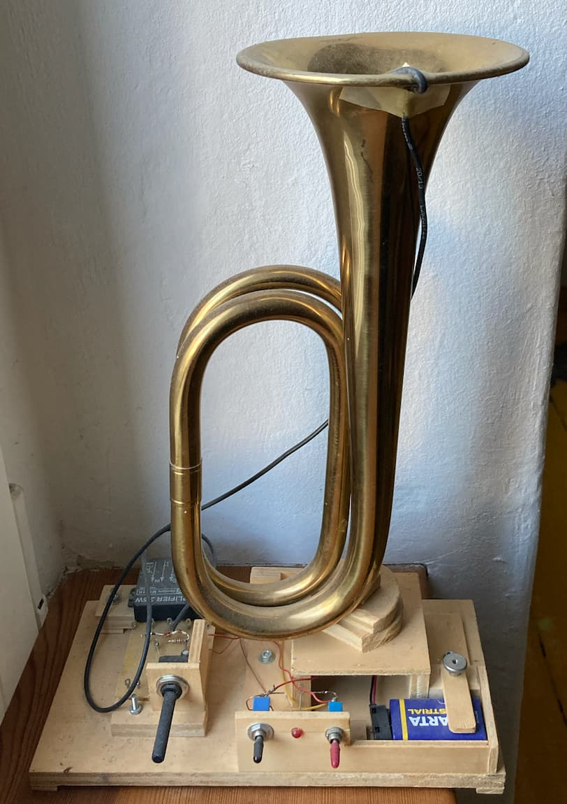

Ernst Zacharias was a German engineer and inventor who lived 1924 – 2020, and in October 2017 I visited him in Hamburg. Beyond listening to his story I took two little videos of him displaying two of his works, and he gave me a gift.
Clavinet
The Clavinet is an electrified version of the Clavichord. Here is Ernst Zacharias playing it:
Reversed reed pipes
One of his research fields was a getting Sheng-like pipes to work for organs by installing a harmonica reed into a resonator in the reversed way. It results in the pipe having the pitch of the resonator and not of the reed, although, like generally in orgen pipes, generator and resonator need to be coordinated in order to work well together.
'Wind-less organ pipes'
Expecting his end, Zacharias gave his 'wind-less organ pipes' to visitors, and I received a trumpet shaped one. A resonator has a microphone on one end and a speaker on the other, and the audio feedback is shaped by the resonator.
Text last updated: January 19th 2025